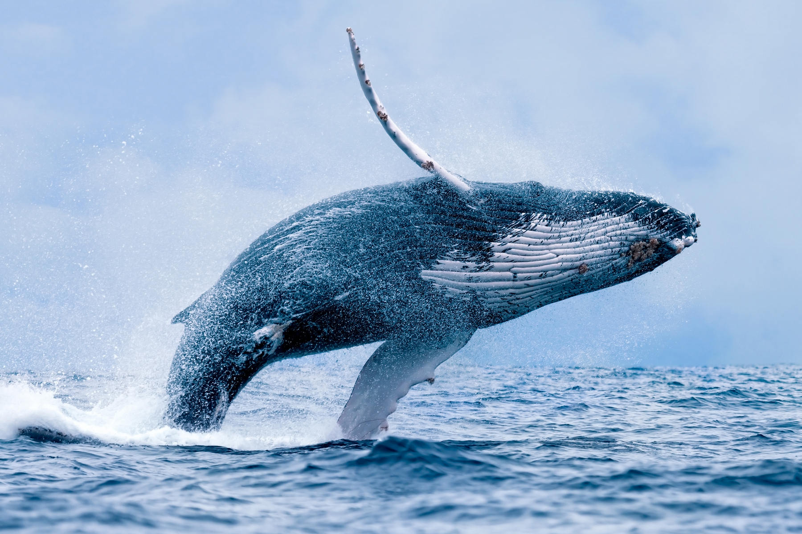
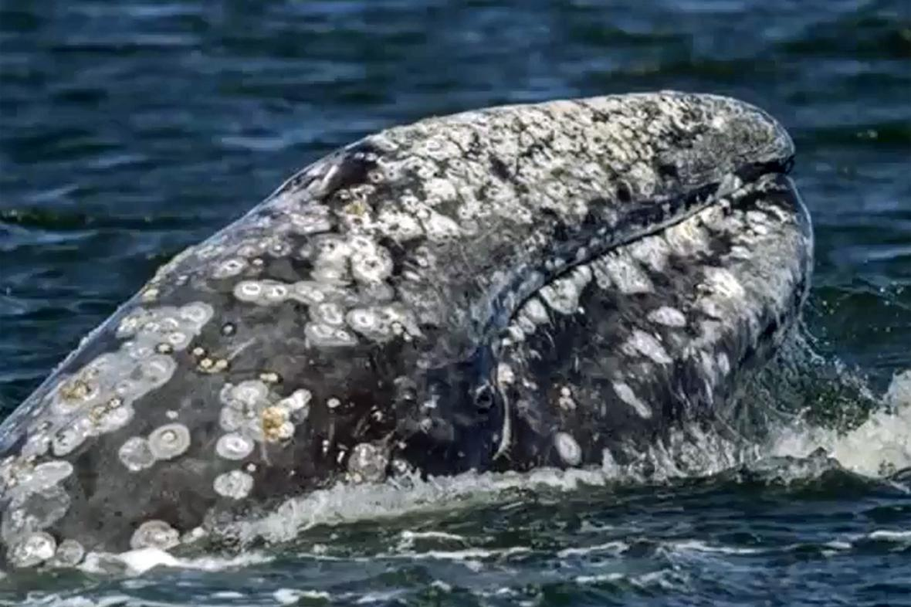
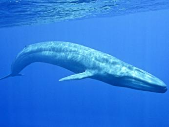

Kosticovci
- Velikost od 6 do 30 metru
- Vzhledem k tomu ze nemaji zuby tak jedi plankton, kril nebo male ryby
- Vyskytuji se ve vsech oceanech na zemi
- Vsechny druhy hodne migruji na zaklade sezony, Plejtvakovec sedy migruje az 20,000km za rok
- Kosticovci jsou sice obrovsti, ale zaroven velmi radi skacou nad hladinu vody, naprosta vetsina z nich je scchopna vymrstit cele sve telo nad hladinu
- Oproti ozubenym nemaji kosticovci schopnost echolokace, za to vydavaji velmi nizke a hlasite zvuky ktere jdou slyset az na stovky km
Nejvyznamejsi jedinci kosticovcu jsou napriklad
- Keprokak
- Plejtvakovec Sedy
- Plejtvak obrovsky


